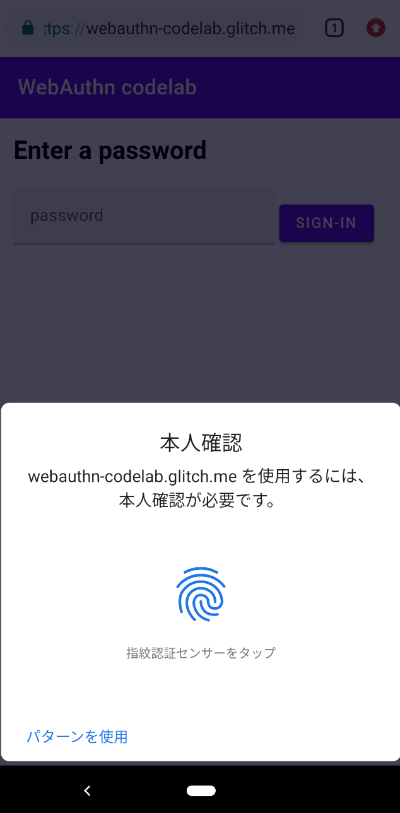
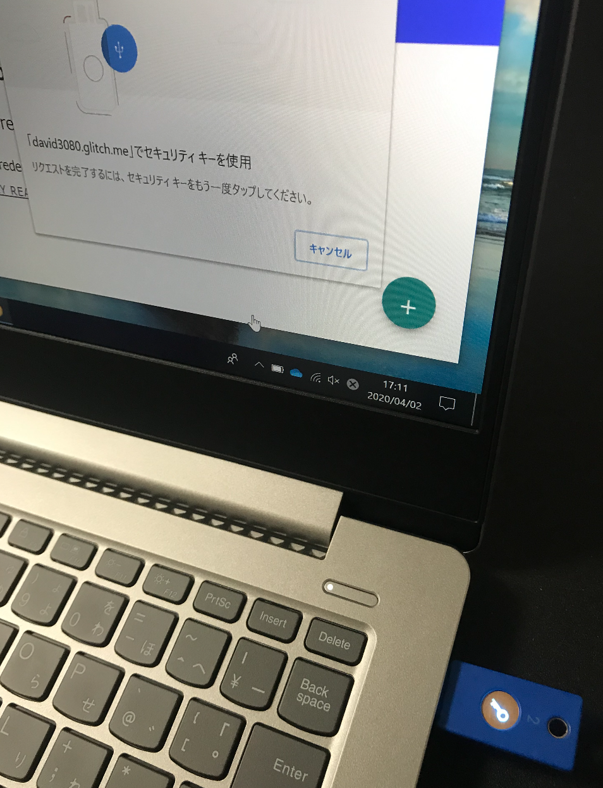

FIDO2とはなにか？
生体認証を使った本人確認などを通してログインを行いわずらわしいパスワードの入力を回避できる標準化された認証技術に、FIDO2というものがあります。この仕様はFIDOアライアンスという団体が策定しており、仕様に準拠した認証器やサーバに対して認証を与えるといった活動を行っています。一般的に、Webサービスにユーザを登録するには、ユーザはWebサービスが提供するユーザ登録フォームに自分のEメールアドレス等をユーザIDとして入力し、送信します。その後、Webサービス側から返信されたメールに添付されたユーザ登録用ページへのリンクを開き、パスワードや個人情報を登録してユーザ登録を完了する、といったプロセスを経ます。ログイン時は、ログインページにユーザIDと登録したパスワードを入力してWebサービスにログインする、といった流れになります。このように、認証機能は「登録」フェーズと「ログイン」フェーズに分かれていますが、FIDO認証もこれと同じく「FIDO登録」と「FIDOログイン」にわかれています。これらのしくみについての概要は「FIDOの仕組み」を参照してください。
本書ではFIDO2のサーバ実装のハンズオンを通して、FIDOのしくみをコードレベルで解説します。またFIDOアライアンスは、FIDO2サーバの認証を得るためにインターネット経由でFIDO2サーバに接続し仕様に沿っているかを確認するという手順を踏みますが、正式なチェックを行う前にセルフチェックができる「FIDO Conformance Tools」というWindowsもしくはMacにインストールして利用できるツールが提供されています。その入手方法や利用方法についても解説します。
何を実装するか？
本書では、FIDO2対応の認証器を利用するシンプルなWebベースのログインアプリを実装します。上述したように一般的に認証機能は、ユーザの「登録」と「ログイン」に分けられます。そこで本書ではこれらのフローを汎化したサンプルアプリを開発します。まずはパスワードベースのログインを行うだけの、開発のもととなるログインアプリケーションが提供されていますので、そこにFIDO2の機能を付け足す形で開発を行います。
本ハンズオンは、Google社が提供の「Your First WebAuthn」というFIDO2サーバ構築ハンズオンの一部を修正し、日本語で解説したものです。ハンズオンでは、glitchというブラウザ上で編集可能なnodejsの開発環境とサーバ環境を無料から利用できるフィリーミアムなWebサービスを利用しています。開発のベースとなるglitchのプロジェクトは、Google提供のオリジナルハンズオンのものを利用していますが、オリジナルのハンズオンのコードではエラーになるところがあるので、エラーが発生しないよう修正しています。また、FIDOアライアンスが提供するFIDO2サーバの自動チェックツール「FIDO Conformance Tools」が使えるよう、インターネット経由でREST APIアクセスを可能にしたり、URIを変更したりしています。
ハンズオンで開発するFIDO2サーバの開発前と開発後の画面イメージは下記のとおりです。
画面イメージ
（開発前）パスワードによるログイン
① ユーザ名を入力してNEXTボタンを押下 |
② 初回登録用のパスワードを入力して「SIGN-IN」ボタンを押下 |
③ ホーム画面の表示 |
④ 「TRY REAUTH」ボタンを押下すると画面②に移動するのでパスワードを入れて再度ログイン |

（開発後）FIDO2によるログイン
①ユーザ名を入力してNEXTボタンを押下 | ②初回登録用パスワードを入力しSIGN-INボタンを押下 | ③ホーム画面表示。右下の「+」ボタンを押下 |
④指紋認証により本人確認 | ⑤キーペアの公開鍵を送信、サーバに登録 | ⑥ TRY REAUTHを押下すると再度指紋認証が求められる  |
必要なもの
本書のハンズオンを行うには、作業がしやすいよう下記のPC環境をおすすめします。
① Mac Book Pro/AirとChromeブラウザ（Chrome 70以降）
② Windows 10 PCとChromeブラウザ（Chrome 70以降）
また下記リンクをChromeで開き、Virtual Authenticators Tabをインストールしてください。
https://chrome.google.com/webstore/detail/virtual-authenticators-ta/gafbpmlmeiikmhkhiapjlfjgdioafmja
開発したFIDO2サーバをブラウザから試すには以下のデバイスとブラウザの組み合わせでの利用も可能です。認証器をお持ちの方や購入検討している方は参考にしてください。
デバイスとブラウザ（以下のうちのどれか）:
- Android（Android 7.0以降）とChromeブラウザ（Chrome 70以降）
- iPhoneとSafariブラウザ（iPhone 7以降、iOS 13.3以降）
- Mac Book Pro/AirとChromeブラウザ（Chrome 70以降）
- Windows 10 とEdgeブラウザ（Windows 10 May 2019アップデート以降）
- Windows 10 とChromeブラウザ（Chrome 70以降）
認証器（以下のうちのどれか）:
- FIDO2対応の認証器
- デバイス内蔵の認証器
- Chrome拡張Virtual Authenticators Tab（物理的な認証器が手元にない場合）
上記のデバイス、ブラウザと認証器の組み合わせの例は以下のとおりです。
① 認証機内蔵のAndroidとChrome (Pixel 3a は背面に指紋認証がついており、
| ② AndroidとChromeとUSB型認証器 (Pixel 3aに「YubiKey 5Ci」をUSB-Cで接続し、 |
③ iPhoneとSafariとUSB型認証器 (iPhone7に「YubiKey 5Ci」をLightningで接続、SafariブラウザでFIDO2認証を行います) | ④ Mac BookとChromeブラウザとUSB型認証器 (Mac Bookに「Yubico Security Key」をUSB-Aで |
⑤ Windows10とEdgeブラウザとUSB型認証器 (Windows10にYubico Security KeyをUSB-Aで | ⑥ Windows10とChromeブラウザとUSB型認証器 (Windows10にYubico Security KeyをUSB-Aで  |
認証器の種類
ここでは上述で紹介した認証器が認証行為そのものとどう関係しているのかを整理します。
まず、IT分野における「認証」という行為は、一般的に「知識」「所有」「生体」という３つの要素の組み合わせと考えられています。IDとパスワードの組み合わせは物理的な「所有」や「生体」とは関係なく、ユーザ登録をした本人しかほぼ知り得ない「知識」をもとにした認証です。しかし、「ほぼ知り得ない」というのが危険で、フィッシングサイト等を経由して盗まれたり、サーバ側で漏洩したりする危険性があります。一方、公開鍵暗号化方式のキーペアを使った通信では、秘密鍵ファイルの保存管理が面倒くさかったり、紛失の可能性が高いといった問題があります。
そのため、FIDOでは認証器なるものを用意し、その中の安全なエリアで適宜キーペアが作成され、必要に応じてその中の秘密鍵を使って署名を行ったり相手側から送信された公開鍵による署名をチェックするしくみを採用しています。認証器の重要なポイントは、どのような方法を使っても秘密鍵は取り出すことができないが署名はできる、という機能を持つことです。
第一段階として、この認証器をUSBドングルやNFCカードとして用意し、ユーザはそれを「所有」し、PINコードで守ることで「知識」のエッセンスを加える方式が取られました。この方式をとるものが上述のYubico社の「Yubico Security Key」や「YubiKey 5Ci」です。さらにこの認証器に「生体」認証のしくみを加え、キーペア作成や秘密鍵による署名、公開鍵による署名のチェックといった処理を認証器が行う前に生体認証を行う、という方式をとるものに進化しました。それを実現しているのがGoogle Pixelに同梱された生体認証による認証器やWindows PCに同梱された生体認証機能であるWindows Hello、Yubico社の「Yubikey Bio」などです。
以上を認証の3要素の組み合わせと認証方式を整理すると以下の4種類に分けられます。
- 知識：パスワード認証
- 所有：PINコードや生体認証のない認証器による認証（YubiKeyの初期状態はこれ）
- 知識と所有：PINコードを設定した認証器による認証（YubiKeyに設定できる）
- 生体と所有：生体認証のついた認証器による認証（Google PixelやWindows Hello）
FIDOでは上記3もしくは4を備えた認証器のことを「User Verification（ユーザ検証）」があると表現します。
また認証器がデバイスに内蔵されているかとりはずせるかによって「platform（内蔵された認証器を利用する場合）」と「cross-platform（取り外し可能な認証器を利用する場合）」や「internal（内蔵型）」、「usb（USBドングル型）」、「ble（ブルートゥース接続型）」、「nfc（NFC接続型）」に分けられます。これらの概念はFIDO2サーバからブラウザに利用可能な認証器のタイプを指定する際に使います。
ちなみに上述で画面キャプチャを紹介した「FIDO2によるログイン」では、本書のハンズオンのもととなるGoogle社のハンズオン「Your First WebAuthn」で構築するFIDO2サーバが「User Verification（ユーザ検証）」に対応した「platform（内蔵された認証器を利用する場合）」で「internal（内蔵型）」の認証器のみ許可するよう指定しているため、これに対応したGoogle Pixel 3a上のChromeを利用しています。「cross-platform（取り外し可能な認証器を利用する場合）」型のYubiKeyではこの条件に反するため利用できないわけです。
ハンズオンでは前述で紹介した glitch というフリーミアムなWebサービスを利用します。フリーミアムサービスであることもあり、初回の起動に時間がかかることがあります（たまにサービスがダウンしていることもありますが、https://status.glitch.com/ からサービスの状態を確認することができます）。
ハンズオンで何を実装するか？
- 開発前の「パスワードによるログイン」にコードを付け足すことで、認証器を使ったパスワードレス認証を実装します。
- オリジナルのハンズオンのFIDOサーバでは、対応認証器の条件に「User Verification」型で「platform」型の認証器（例えば、指紋認証機能付きのAndroidスマホなど）を指定していますが、本書ではあらゆるタイプの認証器に対応するよう実装します。
プロジェクトを「Remix」(フォーク)
- glitch にユーザ登録し、ログインします。
- https://glitch.com/edit/#!/webauthn-codelab-start にアクセスし、画面右上の「Remix to Edit」ボタンを押下します。これによりハンズオンのベースプロジェクトであるパスワードログインプロジェクトを自分のプロジェクトとしてフォークします。
- フォークされたプロジェクトのプロジェクト名は他とかぶらない文字列を使って勝手に生成されますが（下図の「changeable-morning-kos...」）、この文字列は修正が可能です（既存プロジェクト名とかぶらないことが条件）。
ホスト名の設定
フォークしたプロジェクトを編集するには、下図のように画面左側のファイルツリーから編集したいファイルを選択します。
まず .env ファイルの該当部分を下記の通り編集します。
.env
HOSTNAME=<プロジェクト名>.glitch.me
これによりブラウザから「https://<プロジェクト名>.glitch.me」にアクセスできるようになります。
Virtual Authenticators Tabのインストール
前述したとおり、本書はFIDO2サーバ構築のハンズオンであり、本来はFIDO2に対応した認証器を使いたいところですが、FIDOアライアンスにはApple社が参加したばかりの状況で、まだまだデバイス内蔵型の認証器は十分普及していません。また、USB型の認証機などをお持ちの方も少ない状況だと思いますので、ここではパソコン上のChromeブラウザにその拡張機能である「Virtual Authenticators Tab」をインストールして利用することとします。ハンズオンの開発後の確認作業で利用しますので、ここでインストールを行います。
- パソコンにChrome（バージョン70以上）がインストールされていない場合は手元のブラウザから下記URLにアクセスしてChromeをインストールします。
https://www.google.com/intl/ja_ALL/chrome/ - Chromeを開いて、chromeウェブストアにアクセスします。
- 画面左上のテキストエリアに「Virtual Authenticators Tab」と入力してEnterを押下するとChrome拡張「Virtual Authenticators Tab」がリストの一番上に表示されますので、「Chromeに追加」ボタンを押下してインストールします。
- 右上のボタンを押下し、「その他のツール」>「デベロッパーツール」を選択します。
- Chromeブラウザの下部にデベロッパーツールが表示されますので、ヘッダーの一番右側にある「Virtual Authenticators」のタブを選択し、表示された画面上の「Enable Virtual Authenticator Environment」にチェックをいれます。
- 上図の通り「New Authenticator」画面が表示されますので、デフォルトのままで「Add」ボタンを押下すると仮想認証器が作成され、Chromeブラウザと接続します。これで準備が整った状態になります。
- 各設定値の意味は以下のとおりです。
- Authenticatorの右に表示される"[8桁]-[4桁]-[4桁]-[4桁]-[12桁]"からなる文字列はAAGUID（Authenticator Attestation Global Unique Identifierの略）と呼ばれ、物理的な認証器一つ一つに割り当てられるIDを表します。本来FIDOアライアンスから認証を受けた認証器メーカに重複しないようにIDを割り当てることによって管理されています。例えば、Yubico社にはリンク先のようなAAGUIDが割り当てられています。
- Protocolとして指定されているCTAP2とはFIDO2で規定されているブラウザと認証器の間でやり取りされるインタフェース仕様を取り決めたものです。そのため、認証器デバイスの製造メーカーが意識する仕様でFIDO2サーバ開発者は意識する必要はありません。
- Transportとは認証器のタイプを表し、USB接続型の場合は"usb"、ブルートゥース接続型の場合"ble"、NFC接続型の場合"nfc"、デバイス内蔵型の場合は"internal"になります。
- Supports Resident KeysのResident Keyとは認証器に登録される複数のキーペアに対してユーザID、ユーザ名、ディスプレイ名もあわせて登録できることを表します。これによりログイン先に対して複数のキーペアの候補がある場合、ディスプレイ名をリストしてユーザを選択して利用するといったユーザインタフェースが可能になります。
- Supports User VerificationのUser Verificationとは「はじめに」の「認証器の種類」で説明したとおり、認証器にアクセスする際生体認証やPINコードを通してユーザの検証を行うかを表します。
フォークしたプロジェクトは、nodejsのプロジェクトとして構成されており、npmというパッケージ管理ソフトで管理されています。npmでは、package.jsというファイルでインストールするパッケージやバージョンを指定します。また、本プロジェクトはExpressというWebアプリフレームワークを利用しており、外部からのアクセスはまずserver.jsで処理されます。
ここでは「server.js」ファイルを開いて下記の説明の該当部分を確認ください。編集は必要ありません。
server.js
app.get('/', (req, res) => {
// Check cookie
if (req.cookies.username) {
// If user is signed in, redirect to `/reauth`.
res.redirect(307, '/reauth');
return;
}
// If user is not signed in, show `index.html` with id/password form.
res.render('index.html');
});
app.get('/home', (req, res) => {
if (!req.cookies.username ||
req.cookies['signed-in'] != 'yes') {
// If user is not signed in, redirect to `/`.
res.redirect(307, '/');
return;
}
// `home.html` shows sign-out link
res.render('home.html', {username: req.cookies.username});
});
app.get('/reauth', (req, res) => {
const username = req.cookies.username;
if (!username) {
res.redirect(302, '/');
return;
}
// Show `reauth.html`.
// User is supposed to enter a password (which will be ignored)
// Make XHR POST to `/signin`
res.render('reauth.html', {username: username});
});
- 「/」にアクセスすると、クッキーにusernameが設定されていたら「/reauth」にリダイレクトされ、設定されていなければ「public/index.html」にリダイレクトされます。
- 「/home」にアクセスすると、クッキーにusernameがセットされ、sign-inにyesがセットされていれば「public/home.html」にアクセスされそうでなければ「/」にリダイレクトされます。
- 「/reauth」にアクセスすると、クッキーにusernameが設定されていれば「public/reauth.html」にリダイレクトされそうでなければ「/」にリダイレクトされます。
server.js
app.use('/auth', auth);
「server.js」の後半で記述されている上記部分は、「/auth」にアクセスすると「libs/auth.js」に処理がうつることを表しており、ここではWebAuthnの仕様で規定されているREST APIを実装しています。しかしこのURIやリクエスト値のJSON形式、レスポンス値のJSON形式がFIDO2仕様と異なっており、後ほど利用する「FIDO Conformance Tools」がうまく通りません。そのため、仕様にあわせて修正を行います。また「FIDO Conformance Tools」はCSRF対応としてヘッダーに「X-Requested-With: XMLHttpRequest」をセットするといった対応はなされておらず、ログイン済みを示すためクッキーに値をセットしたりしないため、「csrfCheck」や「sessionCheck」といった処理も外します。
① ユーザ名登録の修正
こちらは「index.html」にユーザ名を入力してNEXTボタンを押下するとPOSTで呼び出される「/auth/username」のAPI実装部分であり、FIDO2サーバとは直接関係ありません。しかし、FIDO2ではユーザのクリデンシャル情報を登録依頼する際、「displayName」というパラメータが必要であるため、下記の通り追加を行います。
libs/auth.js
修正前：
router.post('/username', (req, res) => {
const username = req.body.username;
// Only check username, no need to check password as this is a mock
if (!username) {
res.status(400).send({ error: 'Bad request' });
return;
} else {
// See if account already exists
let user = db.get('users')
.find({ username: username })
.value();
// If user entry is not created yet, create one
if (!user) {
user = {
username: username,
id: coerceToBase64Url(crypto.randomBytes(32), 'user.id'),
credentials: []
}
db.get('users')
.push(user)
.write();
}
// Set username cookie
res.cookie('username', username);
// If sign-in succeeded, redirect to `/home`.
res.json(user);
}
});
修正後：
router.post('/username', (req, res) => {
const username = req.body.username;
// Only check username, no need to check password as this is a mock
if (!username) {
res.status(400).send({ error: 'Bad request' });
return;
} else {
// See if account already exists
let user = db.get('users')
.find({ username: username })
.value();
// If user entry is not created yet, create one
if (!user) {
user = {
username: username,
displayName: username, // [追加] displayNameも保存する
id: coerceToBase64Url(crypto.randomBytes(32), 'user.id'),
credentials: []
}
db.get('users')
.push(user)
.write();
}
// Set username cookie
res.cookie('username', username);
// If sign-in succeeded, redirect to `/home`.
res.json(user);
}
});
② 登録リクエストの修正
FIDO2サーバの登録リクエスト処理では、クライアントからクッキー値としてusernameとdisplayNameが送信されますので、サーバ側ではランダムにチャレンジ文字列を生成しusernameに紐づけてデータベースに保存し、ブラウザが認証器に渡すためのoptionsの値を設定してクライアントに返信します。また、リクエストのクッキーにdisplayNameを追加したり、データベースに存在しないuser情報を保存する処理を追加したりといった修正点は修正後のコード内にコメントとして追加しました。
libs/auth.js
修正前：
router.post('/registerRequest', csrfCheck, sessionCheck, async (req, res) => {
const username = req.cookies.username;
const user = db.get('users')
.find({ username: username })
.value();
try {
const response = await f2l.attestationOptions();
response.user = {
displayName: 'No name',
id: user.id,
name: user.username
};
response.challenge = coerceToBase64Url(response.challenge, 'challenge');
res.cookie('challenge', response.challenge);
response.excludeCredentials = [];
if (user.credentials.length > 0) {
for (let cred of user.credentials) {
response.excludeCredentials.push({
id: cred.credId,
type: 'public-key',
transports: ['internal']
});
}
}
response.pubKeyCredParams = [];
// const params = [-7, -35, -36, -257, -258, -259, -37, -38, -39, -8];
const params = [-7, -257];
for (let param of params) {
response.pubKeyCredParams.push({type:'public-key', alg: param});
}
const as = {}; // authenticatorSelection
const aa = req.body.authenticatorSelection.authenticatorAttachment;
const rr = req.body.authenticatorSelection.requireResidentKey;
const uv = req.body.authenticatorSelection.userVerification;
const cp = req.body.attestation; // attestationConveyancePreference
let asFlag = false;
if (aa && (aa == 'platform' || aa == 'cross-platform')) {
asFlag = true;
as.authenticatorAttachment = aa;
}
if (rr && typeof rr == 'boolean') {
asFlag = true;
as.requireResidentKey = rr;
}
if (uv && (uv == 'required' || uv == 'preferred' || uv == 'discouraged')) {
asFlag = true;
as.userVerification = uv;
}
if (asFlag) {
response.authenticatorSelection = as;
}
if (cp && (cp == 'none' || cp == 'indirect' || cp == 'direct')) {
response.attestation = cp;
}
res.json(response);
} catch (e) {
res.status(400).send({ error: e });
}
});
修正後：
// [修正1] URIを変更し、csrfCheckとsessionCheckを削除
router.post('/attestation/options', async (req, res) => {
const username = req.body.username; // [修正2] usernameをbodyから取得
const displayName = req.body.displayName; // [修正3] displayNameを追加
// [修正4] userは後ほど修正が入るため、型をconstからletに変更
let user = db.get('users')
.find({ username: username })
.value();
// [修正5] ユーザがいなければDBに追加
if (!user) {
user = {
username: username,
displayName: displayName,
id: coerceToBase64Url(crypto.randomBytes(32), 'user.id'),
credentials: []
}
db.get('users')
.push(user)
.write();
}
try {
const response = await f2l.attestationOptions();
response.user = {
displayName: user.displayName, // [修正6] displayNameをセット
id: user.id,
name: user.username
};
res.cookie('username', user.username); // [修正6] usernameをcookieにセット
response.challenge = coerceToBase64Url(response.challenge, 'challenge');
res.cookie('challenge', response.challenge);
response.excludeCredentials = [];
if (user.credentials.length > 0) {
for (let cred of user.credentials) {
response.excludeCredentials.push({
id: cred.credId,
type: 'public-key',
// [修正7] 認証器タイプに、"usb", "nfc", "ble"を追加
transports: ['internal','usb','nfc','ble']
});
}
}
response.pubKeyCredParams = [];
// const params = [-7, -35, -36, -257, -258, -259, -37, -38, -39, -8];
const params = [-7, -257];
for (let param of params) {
response.pubKeyCredParams.push({type:'public-key', alg: param});
}
// [修正8] リクエストにauthenticatorSelectionがセットされているかチェック
if(req.body.authenticatorSelection) {
const as = {}; // authenticatorSelection
const aa = req.body.authenticatorSelection.authenticatorAttachment;
const rr = req.body.authenticatorSelection.requireResidentKey;
const uv = req.body.authenticatorSelection.userVerification;
let asFlag = false;
if (aa && (aa == 'platform' || aa == 'cross-platform')) {
asFlag = true;
as.authenticatorAttachment = aa;
}
// [修正9] rrの存否チェックロジックを修正
if ((rr !== undefined) && typeof rr == 'boolean') {
asFlag = true;
as.requireResidentKey = rr;
}
if (uv && (uv == 'required' || uv == 'preferred' || uv == 'discouraged')) {
asFlag = true;
as.userVerification = uv;
}
if (asFlag) {
response.authenticatorSelection = as;
}
}
// [修正9] 修正8のロジック追加に伴い、cp部分を移動
const cp = req.body.attestation; // attestationConveyancePreference
if (cp && (cp == 'none' || cp == 'indirect' || cp == 'direct')) {
response.attestation = cp;
}
// [修正10] extensionsを追加
const ex = req.body.extensions;
if (ex) {
response.extensions = ex;
}
// [修正11] statusとerrorMessageをレスポンスに追加
response.status = 'ok';
response.errorMessage = "";
res.json(response);
} catch (e) {
// [修正12] エラー時のresponseを修正
res.status(400).send({status:"failed",
errorMessage:"/attestation/options: "+e.message});
}
});
③ 登録処理の修正
FIDO2サーバの登録処理では、前述の登録リクエストで返されたoptions（ユーザIDやチャレンジ文字列がセット）を受けたブラウザは、「navigator.credentials.create(options)」というFIDO2対応のJavaScriptを実行し、ユーザIDに紐付いたキーペアを作成し、その公開鍵等をセットしたattestation値をFIDOサーバに送信します。FIDO2サーバはここで実装する登録処理で受領したattestationから公開鍵を取り出し、該当するユーザと紐づけてデータベースに保存します。
libs/auth.js
修正前：
router.post('/registerResponse', csrfCheck, sessionCheck, async (req, res) => {
const username = req.cookies.username;
const challenge = coerceToArrayBuffer(req.cookies.challenge, 'challenge');
const credId = req.body.id;
const type = req.body.type;
try {
const clientAttestationResponse = { response: {} };
clientAttestationResponse.rawId =
coerceToArrayBuffer(req.body.rawId, "rawId");
clientAttestationResponse.response.clientDataJSON =
coerceToArrayBuffer(req.body.response.clientDataJSON, "clientDataJSON");
clientAttestationResponse.response.attestationObject =
coerceToArrayBuffer(req.body.response.attestationObject, "attestationObject");
let origin = '';
if (req.get('User-Agent').indexOf('okhttp') > -1) {
const octArray = process.env.ANDROID_SHA256HASH.split(':').map(h => parseInt(h, 16));
const androidHash = coerceToBase64Url(octArray, 'Android Hash');
origin = `android:apk-key-hash:${androidHash}`; // TODO: Generate
} else {
origin = `https://${req.get('host')}`;
}
const attestationExpectations = {
challenge: challenge,
origin: origin,
factor: "either"
};
const regResult = await f2l.attestationResult(clientAttestationResponse, attestationExpectations);
const credential = {
credId: coerceToBase64Url(regResult.authnrData.get("credId"), 'credId'),
publicKey: regResult.authnrData.get("credentialPublicKeyPem"),
aaguid: coerceToBase64Url(regResult.authnrData.get("aaguid"), 'aaguid'),
prevCounter: regResult.authnrData.get("counter")
};
const user = db.get('users')
.find({ username: username })
.value();
user.credentials.push(credential);
db.get('users')
.find({ username: username })
.assign(user)
.write();
res.clearCookie('challenge');
// Respond with user info
res.json(user);
} catch (e) {
res.clearCookie('challenge');
res.status(400).send({ error: e.message });
}
});
修正後：
// [修正1] URIを変更し、csrfCheckとsessionCheckを削除
const base64url = require('base64url');
router.post('/attestation/result', async (req, res) => {
const username = req.cookies.username;
const challenge = coerceToArrayBuffer(req.cookies.challenge, 'challenge');
const credId = req.body.id;
const type = req.body.type;
try {
if(!req.body.id || typeof req.body.id != 'string') { //[修正2]idをチェック
throw Error("Not adequate user id");
} else if(req.body.id != req.body.rawId) { //[修正3]idとrawIdが同じかチェック
throw Error("User id and rawId is different.");
}
if(!req.body.type || req.body.type != 'public-key') { //[修正4]typeをチェック
throw Error("'type' is not 'public-key'");
}
//[修正5]clientDataJSON.originがnullでなくstringであることをチェック
let clientDataJSON = JSON.parse(base64url.decode(req.body.response.clientDataJSON));
if(!clientDataJSON.origin || typeof clientDataJSON.origin != 'string') {
throw Error("clientDataJSON.origin should be string");
}
const clientAttestationResponse = { response: {} };
clientAttestationResponse.rawId =
coerceToArrayBuffer(req.body.rawId, "rawId");
clientAttestationResponse.response.clientDataJSON =
coerceToArrayBuffer(req.body.response.clientDataJSON, "clientDataJSON");
clientAttestationResponse.response.attestationObject =
coerceToArrayBuffer(req.body.response.attestationObject, "attestationObject");
let origin = '';
if (req.get('User-Agent').indexOf('okhttp') > -1) {
const octArray = process.env.ANDROID_SHA256HASH.split(':').map(h => parseInt(h, 16));
const androidHash = coerceToBase64Url(octArray, 'Android Hash');
origin = `android:apk-key-hash:${androidHash}`; // TODO: Generate
} else {
origin = `https://${req.get('host')}`;
}
//[修正6]clientDataJSON.originとoriginが同一であることのチェック
if(clientDataJSON.origin != origin) {
throw Error("clientDataJSON.origin and origin should be same.");
}
const attestationExpectations = {
challenge: challenge,
origin: origin,
factor: "either"
};
//[修正7] デバッグのため、f2l.attestationResultの例外処理を追加
let regResult;
try {
regResult = await f2l.attestationResult(clientAttestationResponse, attestationExpectations);
} catch(e) {
console.log(e.message);
throw e;
}
const credential = {
credId: coerceToBase64Url(regResult.authnrData.get("credId"), 'credId'),
publicKey: regResult.authnrData.get("credentialPublicKeyPem"),
aaguid: coerceToBase64Url(regResult.authnrData.get("aaguid"), 'aaguid'),
prevCounter: regResult.authnrData.get("counter")
};
const user = db.get('users')
.find({ username: username })
.value();
user.credentials.push(credential);
db.get('users')
.find({ username: username })
.assign(user)
.write();
res.clearCookie('challenge');
// Respond with user info
// [修正8] statusとerrorMessageをレスポンスに追加
user.status = "ok";
user.errorMessage = "";
res.json(user);
} catch (e) {
res.clearCookie('challenge');
// [修正9] エラー時のresponseを修正
res.status(400).send({status:"failed",
errorMessage:"/attestation/result: "+e.message});
}
});
上記コードをコピーすると「const base64url = require('base64url');」部分でエラーになると思いますが、これはnpmのパッケージにbase64urlというものがインストールされていないことが理由です。npmパッケージは「package.json」に設定しますので、「package.json」を開いて下記の通り「"dependencies" : {」の下部に「"base64url": "^3.0.1",」を追記します。ファイルを保存するとglitchが勝手にnpmパッケージをダウンロード・インストールしてくれます。
package.json
{
"name": "webauthn-codelab",
"version": "0.0.1",
"description": "A simple Node app built on Express, instantly up and running.",
"main": "server.js",
"scripts": {
"start": "node server.js"
},
"dependencies": {
"base64url": "^3.0.1",
"express": "^4.16.4",
"hbs": "^4.0.4",
"cookie-parser": "^1.4.4",
"lowdb": "^1.0.0",
"crypto": "^1.0.1",
"fido2-lib": "agektmr/fido2-lib#android-compatible3"
},
"engines": {
"node": "8.x"
},
"repository": {
"url": "https://glitch.com/edit/#!/hello-express"
},
"license": "MIT",
"keywords": [
"node",
"glitch",
"express"
]
}
④ 認証依頼処理の修正
FIDO2サーバの認証依頼処理では、クライアント側からユーザ名（username）とローカルに保存したクリデンシャルID（credId）が送信されますので、サーバ側ではユーザ名をもとにデータベースを検索してその存否を確認します。存在しなければ認証できませんのでその旨を返します。ユーザが存在していたら、そのユーザに紐付いたクリデンシャルが保存されているかをクライアントから送信されたクリデンシャルIDをキーにして検索し、存在していればそれを返信のため、allowCredentialsという配列にセットします。サーバから返信する値はassertionオプションと呼ばれ、そこに認証時に使うチャレンジ文字列や前述のallowCredentials配列をセットしてクライアントに返します。
libs/auth.js
修正前：
router.post('/signinRequest', csrfCheck, async (req, res) => {
try {
const user = db.get('users')
.find({ username: req.cookies.username })
.value();
if (!user) {
// Send empty response if user is not registered yet.
res.json({error: 'User not found.'});
return;
}
const credId = req.query.credId;
const response = await f2l.assertionOptions();
// const response = {};
response.userVerification = req.body.userVerification || 'required';
response.challenge = coerceToBase64Url(response.challenge, 'challenge');
res.cookie('challenge', response.challenge);
response.allowCredentials = [];
for (let cred of user.credentials) {
// When credId is not specified, or matches the one specified
if (!credId || cred.credId == credId) {
response.allowCredentials.push({
id: cred.credId,
type: 'public-key',
transports: ['internal']
});
}
}
res.json(response);
} catch (e) {
res.status(400).json({ error: e });
}
});
修正後：
router.post('/assertion/options', async (req, res) => {
try {
const user = db.get('users')
.find({ username: req.cookies.username })
.value();
if (!user) {
// Send empty response if user is not registered yet.
res.json({error: 'User not found.'});
return;
}
const credId = req.query.credId;
const response = await f2l.assertionOptions();
// const response = {};
response.userVerification = req.body.userVerification || 'required';
response.challenge = coerceToBase64Url(response.challenge, 'challenge');
res.cookie('challenge', response.challenge);
response.allowCredentials = [];
for (let cred of user.credentials) {
// When credId is not specified, or matches the one specified
if (!credId || cred.credId == credId) {
response.allowCredentials.push({
id: cred.credId,
type: 'public-key',
transports: ['internal','usb','nfc','ble'] // [修正1] usb", "nfc", "ble"を追加
});
}
}
// [修正2] extensionsを追加
const ex = req.body.extensions;
if (ex) {
response.extensions = ex;
}
// [修正3] statusとerrorMessageをレスポンスに追加
response.status = "ok";
response.errorMessage = "";
res.json(response);
} catch (e) {
// [修正4] エラー時のresponseを修正
res.status(400).send({status:"failed",
errorMessage:"/assertion/options: "+e.message});
}
});
⑤ 認証処理の修正
FIDO2サーバの認証処理では、クライアントから送信されるFIDO2認証に必要な署名情報を受領します。そして、サーバ側に保存されたユーザの公開鍵と認証依頼処理で作成したチャレンジ文字列、サーバのホスト名（FQDN）で構成されるorigin値といった値から構成されるassertionExpectation（認証の期待値）と、クライアントから受領した公開鍵のID（rawID）やクライアント側が認識するチャレンジ文字列とorigin値などを含むclientDataJSON、クライアント側で署名した情報を含むauthenticatorDataといった値を含むclientAssertionResponseとを比較して正しい署名情報かをチェックします。
libs/auth.js
修正前：
router.post('/signinResponse', csrfCheck, async (req, res) => {
// Query the user
const user = db.get('users')
.find({ username: req.cookies.username })
.value();
let credential = null;
for (let cred of user.credentials) {
if (cred.credId === req.body.id) {
credential = cred;
}
}
try {
if (!credential) {
throw 'Authenticating credential not found.';
}
const challenge = coerceToArrayBuffer(req.cookies.challenge, 'challenge');
const origin = `https://${req.get('host')}`; // TODO: Temporary work around for scheme
const clientAssertionResponse = { response: {} };
clientAssertionResponse.rawId =
coerceToArrayBuffer(req.body.rawId, "rawId");
clientAssertionResponse.response.clientDataJSON =
coerceToArrayBuffer(req.body.response.clientDataJSON, "clientDataJSON");
clientAssertionResponse.response.authenticatorData =
coerceToArrayBuffer(req.body.response.authenticatorData, "authenticatorData");
clientAssertionResponse.response.signature =
coerceToArrayBuffer(req.body.response.signature, "signature");
clientAssertionResponse.response.userHandle =
coerceToArrayBuffer(req.body.response.userHandle, "userHandle");
const assertionExpectations = {
challenge: challenge,
origin: origin,
factor: "either",
publicKey: credential.publicKey,
prevCounter: credential.prevCounter,
userHandle: coerceToArrayBuffer(user.id, 'userHandle')
};
const result = await f2l.assertionResult(clientAssertionResponse, assertionExpectations);
credential.prevCounter = result.authnrData.get("counter");
db.get('users')
.find({ id: req.cookies.id })
.assign(user)
.write();
res.clearCookie('challenge');
res.cookie('signed-in', 'yes');
res.json(user);
} catch (e) {
res.clearCookie('challenge');
res.status(400).json({ error: e });
}
});
修正後：
router.post('/assertion/result', async (req, res) => {
try {
//[修正1]typeをチェック
if(!req.body.type || req.body.type != 'public-key') {
throw Error("'type' is not 'public-key'");
}
// Query the user
const user = db.get('users')
.find({ username: req.cookies.username })
.value();
let credential = null;
for (let cred of user.credentials) {
if (cred.credId === req.body.id) {
credential = cred;
}
}
if (!credential) {
throw 'Authenticating credential not found.';
}
const challenge = coerceToArrayBuffer(req.cookies.challenge, 'challenge');
const origin = `https://${req.get('host')}`; // TODO: Temporary work around for scheme
const clientAssertionResponse = { response: {} };
clientAssertionResponse.rawId =
coerceToArrayBuffer(req.body.rawId, "rawId");
clientAssertionResponse.response.clientDataJSON =
coerceToArrayBuffer(req.body.response.clientDataJSON, "clientDataJSON");
clientAssertionResponse.response.authenticatorData =
coerceToArrayBuffer(req.body.response.authenticatorData, "authenticatorData");
clientAssertionResponse.response.signature =
coerceToArrayBuffer(req.body.response.signature, "signature");
clientAssertionResponse.response.userHandle =
coerceToArrayBuffer(req.body.response.userHandle, "userHandle");
const assertionExpectations = {
challenge: challenge,
origin: origin,
factor: "either",
publicKey: credential.publicKey,
prevCounter: credential.prevCounter,
userHandle: coerceToArrayBuffer(user.id, 'userHandle')
};
//[修正2] デバッグのため、f2l.assertionResultの例外処理を追加
let result;
try {
result = await f2l.assertionResult(clientAssertionResponse, assertionExpectations);
} catch(e) {
console.log("f2l.assertionResult: "+e.message);
throw e;
}
credential.prevCounter = result.authnrData.get("counter");
db.get('users')
.find({ id: req.cookies.id })
.assign(user)
.write();
res.clearCookie('challenge');
res.cookie('signed-in', 'yes');
// [修正3] statusとerrorMessageをレスポンスに追加
user.status = "ok";
user.errorMessage = "";
res.json(user);
} catch (e) {
res.clearCookie('challenge');
// [修正4] エラー時のresponseを修正
res.status(400).send({status:"failed",
errorMessage:"/assertion/result: "+e.message});
}
});
「サーバの構成」では、FIDO2サーバのREST API部分である「auth.js」のソースコードの修正を行いましたが、「Webアプリの作成」では「public/client.js」を編集し、必要なロジックを追加していきます。また、FIDO2サーバがブラウザに提供するHTMLファイルは「views」フォルダ配下に配置されており、ユーザ名入力画面が「views/index.html」、パスワード入力画面が「views/reauth.html」、ホーム画面が「views/home.html」ですので、こちらにもFIDO2認証に対応するためのUIやロジックを追加していきます。
ここで実装する「登録」では、ホーム画面の右下にFABボタンを用意してユーザの認証器が作成するキーペアの公開鍵を登録できるよう実装します。
registerCredential() 関数の追加
home画面に実装するFABボタンのクリック時に呼び出される関数 registerCredential() を「public/client.js」に実装していきます。
public/client.js
コメント「// 6. Register the credential to the server endpoint: `/auth/registerResponse`」の下部に下記コードを追記
export const registerCredential = async (opts) => {
// ここに以下に説明するコードを追記します。
// ①ブラウザのWebAuthn対応チェック
// ②サーバのAPIエンドポイントからoptionsを取得
// ③クリデンシャルの作成
// ④サーバのAPIエンドポイントにクリデンシャルを登録
};
①ブラウザのWebAuthn対応チェック
まずはじめにブラウザがWebAuthnに対応しているかをチェックします。そのチェックのためにwindow.PublicKeyCredential を実行し、WebAuthnに対応していなければ例外を投げます。
public/client.js
上記registerCredential関数の中のコメント①の下部に追記
if (!window.PublicKeyCredential) {
throw 'WebAuthn not supported on this browser.';
}
②サーバのAPIエンドポイントからoptionsを取得
認証器にキーペアの生成を依頼する前に、サーバにチャレンジ文字列とその他のパラメータの生成を依頼し、取得します。そのためにAPIを実行する関数 _fetch() を opts を引数に実行し、サーバにPOSTでリクエストを送信します。
public/client.js
上記registerCredential関数の中のコメント②の下部に追記
const options = await _fetch('/auth/attestation/options', opts);
上記の処理でクライアントがサーバから取得するoptions はWebAuthn仕様で規定されている PublicKeyCredentialCreationOptions にのっとって作成されます。optionsは下記のような構造をしています。
{
"rp": {
"name": "WebAuthn Codelab",
"id": "webauthn-codelab.glitch.me"
},
"user": {
"displayName": "Test",
"id": "...",
"name": "test"
},
"challenge": "...",
"pubKeyCredParams": [
{
"type": "public-key",
"alg": -7
}, {
"type": "public-key",
"alg": -257
}
],
"timeout": 1800000,
"attestation": "none",
"excludeCredentials": [
{
"id": "...",
"type": "public-key",
"transports": [
"internal"
]
}
],
"authenticatorSelection": {
"authenticatorAttachment": "platform",
"userVerification": "required"
}
}
③クリデンシャルの作成
上記のoptionsはHTTP送信されるためエンコードされているため、user.id と challenge と excludeCredentials に含まれる ids といったパラメータはバイナリにデコードします。
public/client.js
上記registerCredential関数の中のコメント③の下部に追記
options.user.id = window.base64url.decode(options.user.id);
options.challenge = window.base64url.decode(options.challenge);
if (options.excludeCredentials) {
for (let cred of options.excludeCredentials) {
cred.id = window.base64url.decode(cred.id);
}
}
const cred = await navigator.credentials.create({
publicKey: options
});
その後、navigator.credentials.create() を実行して、認証器に新しいクリデンシャルの生成を依頼します。今回は「Virtual Authenticator Tab」で生成したAuthenticatorが自動的にクリデンシャルを生成し、リストに追加します。生成されたクリデンシャル（cred）は、このあと登録のためサーバに送信されます。
④サーバのAPIエンドポイントにクリデンシャルを登録
クリデンシャルオブジェクトは以下のような形をしています。
{
"id": "...",
"rawId": "...",
"type": "public-key",
"response": {
"clientDataJSON": "...",
"attestationObject": "..."
}
}
クリデンシャル作成前に取得したオプションと同じく、クリデンシャルのいくつかのバイナリパラメータは文字列としてサーバに送信するためエンコードが必要です。またクリデンシャルIDはローカル保存し、登録したIDをもとに認証できるようにします。最後にクリデンシャルオブジェクトをサーバに送信し、HTTPコードが200で返ってきたら登録に成功したことを表します。
public/client.js
上記registerCredential関数の中のコメント④の下部に追記
const credential = {};
credential.id = cred.id;
credential.rawId = window.base64url.encode(cred.rawId);
credential.type = cred.type;
if (cred.response) {
const clientDataJSON =
window.base64url.encode(cred.response.clientDataJSON);
const attestationObject =
window.base64url.encode(cred.response.attestationObject);
credential.response = {
clientDataJSON,
attestationObject
};
}
localStorage.setItem(`credId`, credential.id);
return await _fetch('/auth/attestation/result' , credential);
ホーム画面「views/home.html」にクリデンシャルを登録するFABボタンと登録されたクリデンシャルのリストと削除ボタンを追加します。
① UI部分の実装
このあと追加する getCredentials 関数で設定する ul#list に登録されたクリデンシャルが <div id="list"></div> 部分にリスト表示されます。その後に設定した <button id="register" ...> はFABボタンを表し、ボタンを押下するとあとで追加する register 関数が実行されます。
views/home.html
コメント「1. Build UI placeholder -->」の下部に下記コードを追記
<h3 class="mdc-typography mdc-typography--headline6">
Your registered credentials:
</h3>
<section>
<div id="list"></div>
<button id="register" class="mdc-fab mdc-ripple-upgraded">
<i class="mdc-fab__icon material-icons">+</i>
</button>
</section>
② クリデンシャルのリストを生成する getCredentials 関数
ul#list にクリデンシャルリストを表示するHTML値をセットします。最後に「getCredentials();」を記述することで、「/home」にアクセスしたときにクリデンシャルリストが表示されるようになります。
views/home.html
コメント「// 2. Get a list of credentials and display: `getCredentials()`」下部に以下コードを追記
const getCredentials = async () => {
const res = await _fetch('/auth/getKeys');
const list = document.querySelector('#list');
if (res.credentials.length === 0) {
list.innerHTML = '<div>No credentials found.</div>';
return;
}
const creds = html`${repeat(res.credentials, cred => cred.credId,(cred, index) =>
html`<div class="mdc-card credential">
<span class="mdc-typography mdc-typography--body2">${cred.credId}</span>
<pre class="public-key">${cred.publicKey}</pre>
<div class="mdc-card__actions">
<button id="${cred.credId}" class="mdc-button mdc-button--raised" @click="${removeCredential}">Remove</button>
</div>
</div>`)}`;
render(creds, list);
};
getCredentials();
③ クリデンシャルを削除する removeCredential 関数
クリデンシャルのリストにはそれぞれ「remove」ボタンが作成され、ボタンを押下すると credId を引数に /auth/removeKey が呼ばれ、該当のクリデンシャルが削除されます。
public/client.js
コメント「// 3. Remove the credential: `removeCredential()`」の下部に追記
export const unregisterCredential = async (credId) => {
localStorage.removeItem('credId');
return _fetch(`/auth/removeKey?credId=${encodeURIComponent(credId)}`);
};
views/home.html
コメント「// 3. Remove the credential: `removeCredential()`」の下部に追記
import { unregisterCredential } from '/client.js';
const removeCredential = async e => {
try {
await unregisterCredential(e.target.id);
location.reload();
} catch (e) {
alert(e);
}
};
④ クリデンシャルの登録
最後に「+」のFABボタンが押下されると、新規クリデンシャルを登録するために registerCredential() 関数を実行します。
views/home.html
コメント「// 4. Register a credential」の下部に追記
import { registerCredential } from '/client.js';
const register = document.querySelector("#register");
register.addEventListener("click", e => {
registerCredential({
username: "{{username}}", // TODO usernameを追加
displayName: "{{username}}", // TODO displayNameを追加
attestation: "none",
authenticatorSelection: {
// authenticatorAttachment: "cross-platform",
userVerification: "preferred",
requireResidentKey: false
}
}).then(user => {
location.reload();
}).catch(e => alert(e));
});
registerCredential() 関数の引数は PublicKeyCredentialCreationOptions の形式をとりますが、詳細は下記のとおりです。
attestation | 認証器メーカーにより認証器に組み込まれたattestation証明書が正当なものかをチェックする(direct）か正当なものでなくてもよいか（indirect）、attestation証明書チェックをしないか（none）を指定（参考）。 | |
authenticatorSelection | authenticatorAttachment | 認証器の種類を指定。デバイス内蔵型（platform）か取り外し可能型（cross-platform）かを指定できるが、どちらにも対応したいため、ここではコメントアウトしている。 |
userVerification | ユーザ検証が必要（required）か必要ない（discouraged）か可能なら実施する（preferred）かを指定。requiredを指定するとPIN入力や生体認証が求められる。 | |
requireResidentKey | 認証器に含まれる複数のキーペアをユーザ名とともにブラウザ上にリストしてユーザに選ばせる"account picker" と呼ばれるUXを表示する場合、trueに設定する。 | |
登録と登録画面の実装が完了したので、認証と認証画面を実装していきます。実装後は、ユーザ名がクッキーに残っている状態で、ユーザがブラウザから /reauth にアクセスするとブラウザは自動的に認証器にアクセスし認証が行われます。認証器にPINコードがセットされていればPINコード入力、生体認証がセットされていれば生体認証後にログインが完了し、/home 画面に遷移します。認証器に対応していなかったり認証器による認証が失敗したら従来のパスワード入力が求められます。
authenticate() 関数の追加
authenticate() 関数を作成し、認証器による認証処理を作成します。
public/client.js
コメント「// 1. Create `authetnicate()` function」の下部に追記
export const authenticate = async (opts) => {
// ① ブラウザのWebAuthn対応チェック
// ②サーバのAPIエンドポイントからoptionsを取得
// ③ 認証器からクリデンシャルを取得
// ④ サーバにクリデンシャルを送信して認証
};
① ブラウザのWebAuthn対応チェック
「登録」のときと同じく、まずはじめにブラウザがWebAuthnに対応しているかをチェックします。そのチェックのためにwindow.PublicKeyCredential を実行し、WebAuthnに対応していなければ例外を投げます。We can replicate the same behavior we did on registration.
public/client.js
上記authenticate関数の中のコメント①の下部に追記
if (!window.PublicKeyCredential) {
console.info('WebAuthn not supported on this browser.');
return Promise.resolve(null)
}
②サーバのAPIエンドポイントからoptionsを取得
認証に先立ち、ユーザにひもづくクリデンシャルIDが保存されているかを確認し、クエリパラメータにセットします。この値はサーバ側の「認証依頼」処理に送信されます。サーバは認証器による認証のための署名に必要なパラメータをoptionsとして返します。また、optionsのallowCredentialsが空の場合は、送信したクリデンシャルIDに対応した公開鍵がサーバ側に登録されていないことを意味しますので、パスワード入力に移ります。
public/client.js
上記authenticate関数の中のコメント②の下部に追記
let url = '/auth/assertion/options';
const credId = localStorage.getItem(`credId`);
if (credId) {
url += `?credId=${encodeURIComponent(credId)}`;
}
const options = await _fetch(url, opts);
if (options.allowCredentials.length === 0) {
console.info('No registered credentials found.');
return Promise.resolve(null);
}
以下がサーバから返信されるoptionsの例で、PublicKeyCredentialRequestOptions の仕様に従ったものです。
{
"challenge": "...",
"timeout": 1800000,
"rpId": "webauthn-codelab.glitch.me",
"userVerification": "required",
"allowCredentials": [
{
"id": "...",
"type": "public-key",
"transports": [
"internal"
]
}
]
}
allowCredentials は下記のいずれかの値を取ります。
値 | 意味 |
空配列([]) | サーバに該当するクリデンシャルが登録されていない場合 |
配列が1つのオブジェクトを含む | 送信したクリデンシャルIDとマッチするクリデンシャルがサーバに登録されている場合 |
配列が複数のオブジェクトを含む | クリデンシャルIDを指定していないがユーザがサーバに複数のクリデンシャルが登録されている場合。例えば複数のUSB認証器を同一ユーザで登録している場合、新規デバイスからログインを試みた場合 |
③ 認証器からクリデンシャルを取得
上記のoptionsはHTTP送信されるためエンコードされているため、challenge と allowCredentials に含まれる ids といったパラメータはバイナリにデコードします。そして、navigator.credentials.get() 関数を実行して、認証器に署名を要求します。もし認証器がPINコードロックされていたり、生体認証を求めるものであればその作業をユーザに促します。その後、認証器内の該当クリデンシャルを使って署名されたクリデンシャルオブジェクトをサーバに送付して認証を行います。
public/client.js
上記authenticate関数の中のコメント③の下部に追記
options.challenge = window.base64url.decode(options.challenge);
for (let cred of options.allowCredentials) {
cred.id = window.base64url.decode(cred.id);
}
const cred = await navigator.credentials.get({
publicKey: options
});
④ サーバにクリデンシャルを送信して認証
navigator.credentials.get() を通して認証器からブラウザが取得するクリデンシャルの例は以下のとおりです。
{
"id": "...",
"type": "public-key",
"rawId": "...",
"response": {
"clientDataJSON": "...",
"authenticatorData": "...",
"signature": "...",
"userHandle": ""
}
}
クリデンシャルのバイナリパラメータはサーバに送信できるよう文字列にエンコードされます。また、再ログインの際利用できるよう、クリデンシャルIDをローカルストレージに保存することを忘れないようにします。最終にこのクリデンシャルオブジェクトはサーバに送信され、HTTPコードが200で返ってきたらユーザが正しくログインできたことを意味します。
public/client.js
上記authenticate関数の中のコメント④の下部に追記
const credential = {};
credential.id = cred.id;
credential.type = cred.type;
credential.rawId = window.base64url.encode(cred.rawId);
if (cred.response) {
const clientDataJSON =
window.base64url.encode(cred.response.clientDataJSON);
const authenticatorData =
window.base64url.encode(cred.response.authenticatorData);
const signature =
window.base64url.encode(cred.response.signature);
const userHandle =
window.base64url.encode(cred.response.userHandle);
credential.response = {
clientDataJSON,
authenticatorData,
signature,
userHandle
};
}
localStorage.setItem(`credId`, credential.id);
return await _fetch(`/auth/assertion/result`, credential);
⑤ 認証画面
認証処理は /reauth にアクセスすると行われますが、「views/reauth.html」画面にて行われます。この画面に下記を追記して、画面の読み込み時に「public/client.js」の authenticate() が自動実行され、クリデンシャルが登録されている場合、認証器を経由したログインをこころみます。
views/reauth.html
コメント「// 1. Apply the biometric authentication when user comes back」の下部に追記
import { authenticate } from '/client.js';
authenticate({userVerification: 'preferred'}).then(user => {
if (user) {
location.href = '/home';
}
}).catch(e => {
console.error(e);
console.info('Authentication failed. Use password to sign-in.');
});
ここまでに実装したFIDO2サーバに「Virtual Authenticators Tab」インストールしたChromeブラウザでアクセスして稼働を確認します。手順は以下のとおりです。
① サーバに登録されたユーザデータをサーバ上からクリアするために、下記URLをブラウザから実行します。もちろんこの機能は開発環境としての機能であり本番では実装してはいけません。 https://<プロジェクト名>.glitch.me/auth/resetDB |
② 「https://<プロジェクト名>.glitch.me」にアクセスし、Virtual Authenticator Tabを起動し、デフォルト値でAuthenticatorを作成します。その後、「username」に適当なユーザ名を入力して「NEXT」ボタンを押下します。 |
③ 次のページで「password」に適当なパスワードを入力して「SIGN-IN」ボタンを押下します。初回のため、クリデンシャルが登録されていないため、パスワード入力が必要です。 |
④ ホーム画面が表示されますので、右下「+」のFABボタンを押下すると仮想的なAuthenticatorが自動的にクリデンシャルを作成して公開鍵をサーバに登録します。 |
⑤ ホーム画面で「TRY REAUTH」ボタンを押下すると画面③に移動しますが、仮想認証器のクリデンシャルが読み込まれ、自動的に再ログインします。 |
⑥ ホーム画面で「SIGN OUT」ボタンを押下すると画面②に移動しますが、再度先程入力したユーザ名を入力して「NEXT」ボタンを押下すると②に移動しますが、再び仮想認証器のクリデンシャルが読み込まれ、自動的に再ログインします。クリデンシャルが何度ログインに使用されたかは「Virtual Authenticator Tab」画面にあるクリデンシャルのリスト表にある「Sign Count」列に数値として表示されます。 ちなみに、Exportをクリックするとクリデンシャルの秘密鍵がダウンロードでき、Removeをクリックするとクリデンシャルを削除することができます。 |
FIDOアライアンスの認定プログラム
前述したとおりFIDOアライアンスはFIDOの仕様策定と認証器やFIDOサーバに対する認定プログラムを提供しています。この機能認定プログラムにおける手順のうちまず最初に行うのはテストツールを使用してセフルチェックを行うことです。
FIDO 自己テストツールの取得方法
FIDO自己テストツールの入手方法はリンク先から申請を行うことでだれでも無料でダウンロード先とID、パスワードをFIDOアライアンスからメールで教えてもらうことができます。本書ではFIDO2サーバを構築しましたので、「FIDO2 Test Tools」を利用します。申請フォームに必要項目を入力しSubmitします。数日後に指定したEmailアドレスに必要な情報が送られてきます。
返信メールに記載されたURLにベーシック認証でログインするとフォルダのリストが表示されますので、「Desktop UAF FIDO2 U2F」を選択します。その後、最新バージョンのフォルダを選択すると、Windows版実行ファイル（拡張子exe）、Windows版インストーラ（拡張子msi）もしくはMac版インストーラ（拡張子dmg）の各ファイルをダウンロードできるリンクが表示されますのでプラットフォームに従って選択してダウンロードします。
① インストール後、「FIDO Conformance Tools」を実行します。
② FIDO2 TestsのRunをクリックします。
③ FIDO2 TestsにServer URLと実行するテストを選択します。Server URLは画面右上の「TESTS CONFIGURATION」の真下に「https://<プロジェクト名>.glitch.me/auth」をセットします。実行するテストとしては画面左下の以下の4つを選択します。
- MakeCredential Request : 登録リクエスト処理を意味します。
- MakeCredential Response : 登録処理を意味します。
- GetAssertion Request : 認証リクエスト処理を意味します。
- GetAssertion Response : 認証処理を意味します。
④ 「RUN」ボタンを押下して実行すると下記のような結果になります。本ハンズオンの実装では121のテストケースのうち32が失敗します。
以上のテスト結果が示すとおり、認証器を使ったログインを実現するFIDO2サーバを構築しましたが、三分の一ほどがエラーになります。これはハンズオンが利用しているnpmライブラリがFIDO2を完全にサポートしていないことが理由です。
本書のFIDO2サーバ構築における最も重要なnpmライブラリは「package.json」で宣言されている「"fido2-lib": "agektmr/fido2-lib#android-compatible3"」です。このライブラリはgithubを直接見にいっており「https://github.com/agektmr/fido2-lib/tree/android-compatible3/lib」を利用しています。
このコードは上記リンク先のGithubにおける下記表記が示すとおり、Google提供のハンズオンを作成した「agektmr」さんが管理するものであり、もともとは「apowers313」さんが開発したソースコードをベースにしています。
なお、このライブラリがFIDO2サーバ構築における最も重要であると述べたのは、ライブラリが提供する「f2l」が「libs/auth.js」に記載された下記の４つのコードに関係しているためです。
- | コード | 説明 |
① | f2l.attestationOptions() | クリデンシャル作成前に認証器にわたすオプションを作成。対応するテストケースは「MakeCredential Request」。 |
② | f2l.attestationResult( clientAttestationResponse, attestationExpectations ) | 認証器が作成したクリデンシャルを登録前にチェック。対応するテストケースは「MakeCredential Response」。 |
③ | f2l.assertionOptions() | 署名作成前に認証器にわたすオプションを作成。対応するテストケースは「GetAssertion Request」。 |
④ | f2l.assertionResult( clientAssertionResponse, assertionExpectations ) | 認証器が作成した署名を認証のために検証。対応するテストケースは「GetAssertion Response」。 |
テストケースで失敗しているのは②と④であり、validateで呼ばれる下記コードなどに未実装部分があるため、テストが失敗していると思われます。
https://github.com/agektmr/fido2-lib/blob/android-compatible3/lib/attestations/packed.js
そのため、FIDO2の自己テストツールを通すには上記Githubのソースコードをフォークして未実装部分を追加し、それをpackage.jsonで読み込む形で開発をすすめる必要があります。
一方、リンク先の記事が示すとおり、FIDO2サーバとしていくつか参考になる実装がありますが、その中でも下記の理由から「Strong Key: FIDO2 Server」がおすすめです。
- オープンソースソフトウェアですが商用に耐えうるFIDO2サーバ認証を取得している
- ライセンスはLGPLなのでライブラリ利用なら新規開発分を公開する必要がない
またクライアント側にも課題があります。ここまで動かしてみて気づいたかもしれませんが、ローミング型の認証器はスマホとは別に購入が必要です。最近、Androidデバイスの多くは低価格版も含め生体認証対応の認証機を含みますが、iPhoneは生体認証がついていてもFIDO2に対応していません。そのため、FIDO2の普及にはデバイス内蔵型の認証機の普及が必須であると考えられます。
一方、AndroidもiPhoneも生体認証は普及しつつあり、ロックを解除しないと取り出しができないセキュアストレージの機能を持つスマホは普及しつつあります。このセキュアストレージにクリデンシャルを保存する形で認証器を模した実装が可能であり、例えば下記ではこの手法を使って物理的な認証機を持たないWebAuthnクライアントをサンプル実装しています。
https://github.com/lyokato/WebAuthnKit-Android
https://github.com/lyokato/WebAuthnKit-iOS
さらにこのFIDO2認証を認可のしくみであるOpenID Connectと連携して、認証認可をトータルに提供するAPI環境を構築することが望まれます。
タイトル | URL |
認定の概要 | |
機能認定の概要 | https://fidoalliance.org/certification/functional-certification/?lang=ja |
はじめに | https://fidoalliance.org/certification/getting-started/?lang=ja |
FAQ | |
テストツール申請 | https://fidoalliance.org/certification/functional-certification/conformance/ |
認定事業者の確認 | |
FIDOのしくみ | |
仕様概要 | |
仕様ダウンロード | |
Yahoo | |
メルカリ |